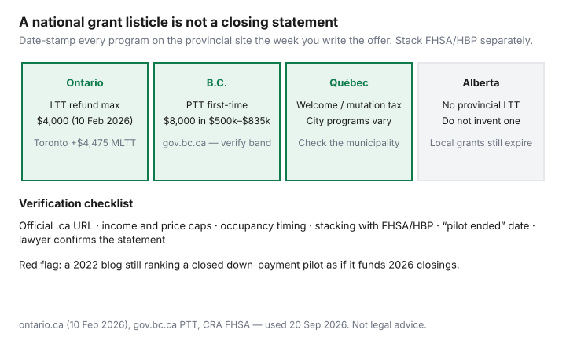

Housing · Canada
Provincial first-time buyer programs map for Canadians (verify before you count on them)

Provincial first-time buyer programs in Canada are mostly land or property transfer tax relief. Ontario refunds up to $4,000, Toronto’s municipal rebate is up to $4,475, and B.C.’s reduction was $8,000 in the $500,000–$835,000 band on our Vancouver page. Confirm on the official .ca page the week you make an offer. National listicles keep ranking down-payment pilots that ran out of money in 2022. Buyers then underwrite a $25,000 grant that a 2026 intake page does not offer. The useful skill is not memorizing every program. It is knowing the program types, the official URL pattern, and the caps that disqualify mid-career buyers — then verifying before the offer.
This is a verification-first map, not a catalogue. Pair it with FTHBI replacements, Ontario LTT, and GST/HST.
Key takeaways
- Treat every national “grant list” as expired until the provincial or city .ca page says otherwise the week you offer.
- Ontario first-time LTT refund max $4,000 (ontario.ca, 10 Feb 2026); Toronto MLTT rebate up to $4,475.
- B.C. first-time PTT reduction: $8,000 in the $500,000–$835,000 band on our Vancouver page — confirm gov.bc.ca.
- Alberta has no provincial LTT to refund. Québec’s mutation/welcome tax is municipal.
- FHSA and HBP are federal wrappers. They do not replace a closed municipal pilot — and FTHBI is still closed (21 Mar 2024).
How to research your province and city without outdated lists
- Search
site.gov.bc.ca first-time(or ontario.ca, quebec.ca, alberta.ca) — not “best first-time grants Canada 2022.” - Open the page’s “last updated” line. If it is older than a budget cycle, look for a replacement bulletin.
- Call or email the program inbox with your income, household size, and target price. Save the reply PDF.
- Ask the lawyer, not the salesperson, whether the program still funds closings in your month.
- If the only source is a realtor blog without a .ca link, treat the dollar amount as zero until proven.

Common program types: LTT relief, down-payment assistance, tax credits
| Type | What it changes | Typical failure mode |
|---|---|---|
| Land-transfer / property-transfer relief | Cash at or after closing | Spouse history; you already owned abroad |
| Down-payment / shared-equity / forgivable loan | Cash to the mortgage desk | Income or price cap; funds exhausted; second-home rules |
| Tax credit (non-refundable) | A later Notice of Assessment, not closing week | You needed cash on closing day |
| GST/HST new-housing | Tax on a new build | You bought a resale |
Ontario, BC, Québec and Alberta at a glance
- Ontario. First-time provincial LTT refund maximum $4,000; full relief on the first $368,000 (ontario.ca, updated 10 Feb 2026). Toronto adds municipal LTT and a first-time rebate up to $4,475. GST/HST paths are separate. Mid-career buyers over the first-time definition get $0 of that refund — they still owe the tax.
- B.C. Property transfer tax with a first-time reduction. Our Vancouver stay-horizon page uses an $8,000 first-time reduction in the $500,000–$835,000 band (gov.bc.ca). Confirm the live calculator; additional property tax and municipal programs are a second search.
- Québec. The welcome tax (droit de mutation) is collected by the municipality. Some cities have first-time or new-build relief that comes and goes. TAL is the tenancy board, not a grant office. Check the city’s finance page and Revenu Québec — not a Toronto blog.
- Alberta. No provincial land-transfer tax. That is the feature. Local down-payment or Habitat-style programs still expire. Do not invent an LTT refund to make a Calgary offer “feel like Ontario.”
Atlantic provinces, Manitoba, and Saskatchewan each have or have had first-time credits and land-transfer rules. Same method: official page, date stamp, lawyer. We do not pretend this paragraph funded your Saint John closing.
Income and price caps that disqualify mid-career buyers
Down-payment pilots are often built for households under a household-income ceiling (figures like $90,000–$150,000 appear on historical federal and municipal pages) and homes under a price cap. A 48-year-old household at $180,000 household income buying a $900,000 resale is usually outside the charity. LTT refunds are different: they care about first-time status and occupancy, not your T4. Know which cap you are facing before you spend a Saturday on a PDF.
Stacking rules with federal FHSA/HBP
CRA’s FHSA ($8,000 / $40,000) and HBP ($60,000, with 2026–2028 repayment-start relief) do not care whether Ontario also refunds LTT. You can often use all three on one purchase if you independently qualify.
You cannot count the same $8,000 three times. FTHBI does not sit on this list — it is closed. GST/HST FTHB is a new-build tax tool, not a down payment. Sequence: qualify for each program on its own page, then build one closing worksheet.
Red flags: expired pilots still ranking in Google
- FTHBI “how to apply” posts after 21 Mar 2024.
- Municipal RAP / down-payment pages that 301 to a “program closed” banner.
- A dollar amount with no year and no URL.
- Influencer math that adds Ontario LTT + Toronto rebate + a B.C. PTT number on the same house.
Verification checklist before making an offer
- Official URL and “last updated” date captured in your notes (today: treat anything we cite as of 20 Sep 2026).
- First-time definition, including spouse and foreign-property history.
- Income and price caps, if any.
- Occupancy deadline (Ontario LTT: nine months is the usual conversation).
- Whether the lawyer claims it at registration or you wait 18 months.
- Stack vs FHSA/HBP/GST — different pipes, one bank account.
If owning only pencils after a phantom grant, you do not have a stack. Run rent vs buy with zeros in the grant column.
Sources
- Ontario.ca, Land transfer tax refunds for first-time homebuyers — $4,000 maximum; $368,000 full-relief threshold (updated 10 Feb 2026; as of 20 Sep 2026).
- City of Toronto MLTT rebate page — up to $4,475 (as of 20 Sep 2026).
- gov.bc.ca property transfer tax / first-time reduction — $8,000 band as cited on our Vancouver page; confirm with the B.C. government.
- CRA FHSA and HBP pages — $8,000 / $40,000 and $60,000 wrappers.
- CMHC home-buying hub and FTHBI closure — 21 Mar 2024 / 31 Mar 2024.
Frequently asked questions
Where should I look up first-time buyer programs in my province?
Start on the provincial or municipal .ca site, not a national listicle. Search the government domain, read the last-updated date, and ask your real-estate lawyer to confirm the program still funds your closing month.
Do all provinces offer a land-transfer-tax refund?
No. Ontario has a first-time refund (max $4,000). Toronto adds a municipal rebate. B.C. uses property transfer tax with a first-time reduction. Alberta has no provincial LTT. Québec’s mutation tax is municipal. Verify your jurisdiction.
Can I stack a provincial program with an FHSA and the Home Buyers’ Plan?
Often yes at a high level because they are different tools — if you meet each program’s rules. Do not count the same dollars three times. FTHBI is closed and is not part of the stack.
Why do I keep seeing programs that no longer exist?
Search rankings are slow. Pilots expire, funds run out, and blogs are not updated. If the official page says closed, the dollar amount on page four of Google is not closing cash.
Is this legal advice?
No. It is a research method. Your lawyer runs the affidavits and statements.
Researched and drafted with AI assistance and fact-checked against official Canadian sources. How we create content.
Disclosure: Mortgage-rate comparison tools are an offer type. Saving Optimizer may earn a commission if we later add partner links. We do not currently claim lender or government partnerships. This is not legal, tax, or brokerage advice.